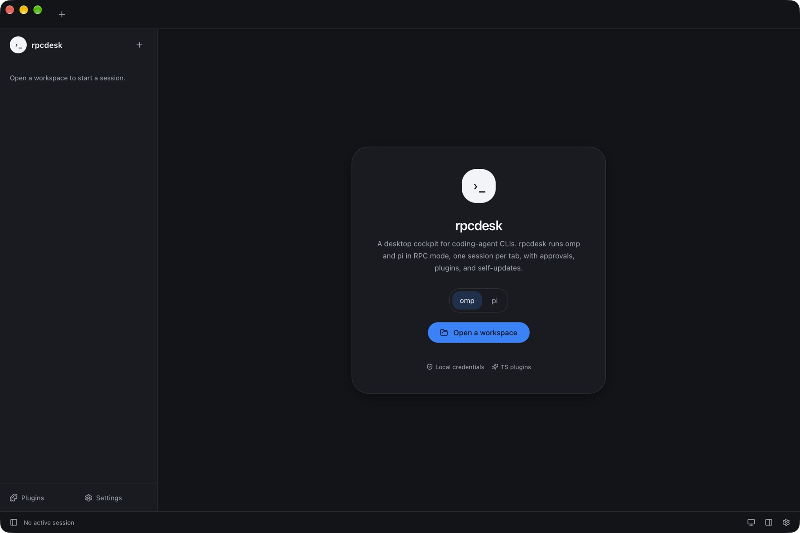
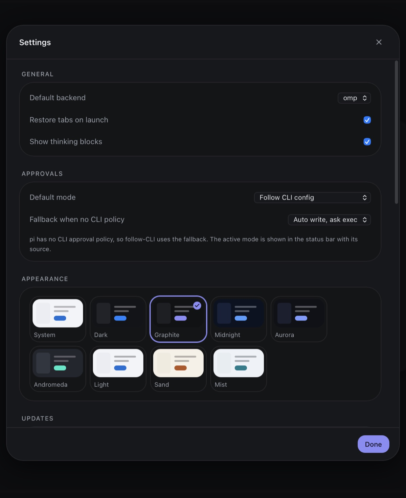
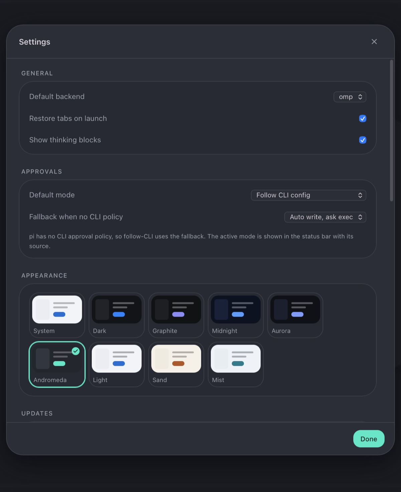
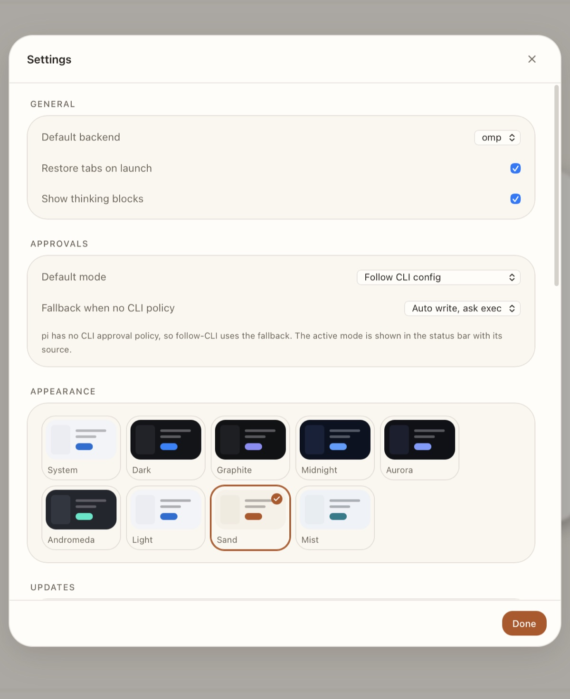
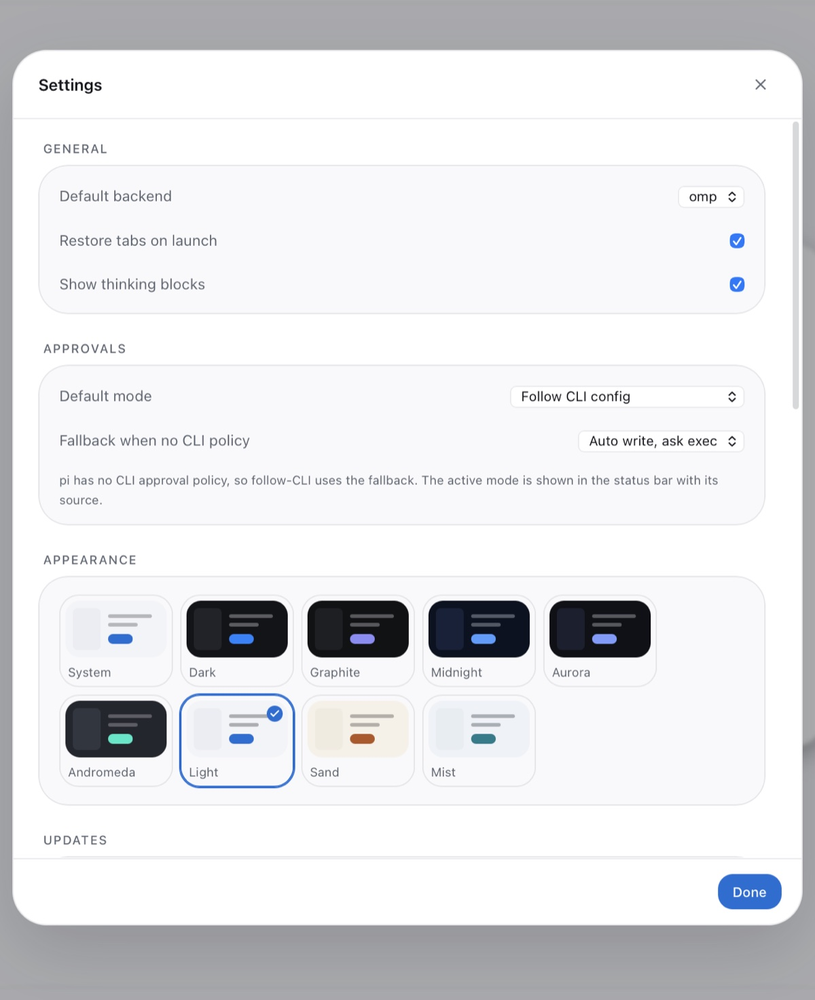

Sessions as tabs
One process per tab, isolated state, crash recovery, and a sidebar that lists every saved session for the workspace.
desktop app · macOS · Linux · Windows
rpcdesk drives the real omp and pi binaries over RPC:
one session per tab, approvals that follow your CLI policy, typed plugins, and
signed updates. Your models, credentials, and tools stay where they already live.

Each tab is bound to a directory. rpcdesk spawns a Bun sidecar that starts
omp --mode rpc or pi --mode rpc there.
Records become typed frames: streamed text, thinking, tool cards with diffs, approvals, and exit codes — all persisted for resume.
Approval prompts carry the CLI's own policy. Kill, fork, or resume a session without leaving the window.
One process per tab, isolated state, crash recovery, and a sidebar that lists every saved session for the workspace.
Follow-CLI, always-ask, auto-write, or yolo. The status bar names the effective mode and where it came from.
Tool renderers, panels, commands, and themes in TypeScript, built by the same toolchain and loaded from your config directory.
System light/dark plus Graphite, Midnight, Aurora, Andromeda, Sand, and Mist — every palette contrast-checked.
Manifests and artifacts are verified with minisign. Install and restart from the app; the log says exactly what happened.
No CLI installed? rpcdesk can download the pinned omp or pi build and verify its SHA-256 first.
One radius scale, layered surfaces, and palettes that keep text at 7:1 or better. Pick from the appearance grid; the sun/moon button cycles system → light → dark.




Every release ships for macOS arm64 and x64, Linux x64 (AppImage, deb, rpm), and Windows x64. Bundles are signed for the updater; Apple and Windows code-signing certificates are not configured yet, so expect a Gatekeeper/SmartScreen prompt.
# from source (Bun + Rust)
git clone https://github.com/RPCDesk/rpcdesk
cd rpcdesk
bun install
bun run build:app
The first launch extracts a bundled Bun runtime and uses your installed
omp/pi, or offers a verified download.
The app is a shell. Models, credentials, tools, and policy stay with the CLIs; rpcdesk owns presentation and process lifetime.